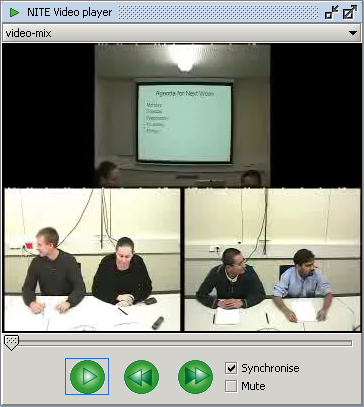

The Media Player (Figure 1) can display audio and video signals.
At the top of the Media Player is the combo box listing all available signals for the chosen observation. When you choose a new signal from the list, the signal is loaded and the player is paused and reset to the start of the signal.
Located at the bottom of the Media Player are the control buttons, the synchronize check box, the mute check box and the playback line. The control buttons are the play/pause button, and the 5 seconds forward and backward buttons. If the synchronize check box is selected the system is in synchronized mode. In the synchronized mode, the highlighted transcription segment or annotation element in the Transcription Area is at the current video and/or audio time.
The mute check box is used to enable/disable the audio file.
The horizontal playback line controls the playback of the signal files.
You can play the video and/or audio fragment for a transcription fragment holding the CTRL key while selecting the fragment of text that you want to replay.

Figure 1: Media Player